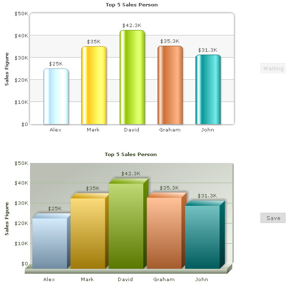
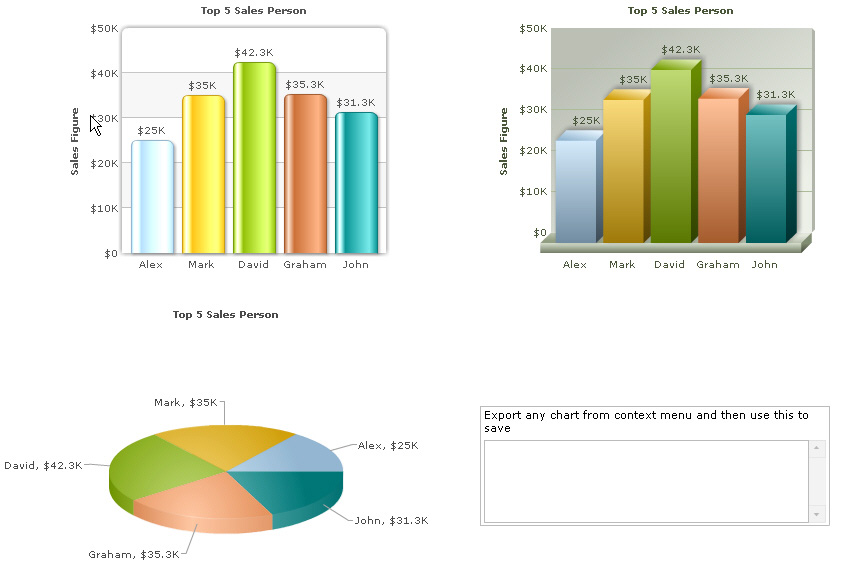
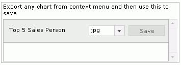
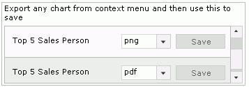
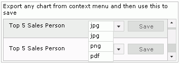
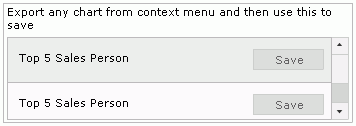

| Exporting multiple charts | ||||||||||||||||||||||||
When you have multiple charts present on your page, there are three ways to export them using Export Component:
To aid your understanding of this section, we will recommend you to go through the Overview page of Exporting Charts as PDF or Images > Client-side export The differences between each mode can be listed as under: |
||||||||||||||||||||||||
|
||||||||||||||||||||||||
| In this page, we explain the first two methods - One to One and Many to One. Let us start with the simpler one - One to One Mode. | ||||||||||||||||||||||||
| One to One Mode | ||||||||||||||||||||||||
This is the simplest saving mode when you have multiple charts in your page. In this mode, you basically create one instance of Export Component per chart, and link the same in chart's XML. Consider the XML code for 2 charts below: Chart 1: <chart yAxisName='Sales Figure' caption='Top 5 Sales Person' numberPrefix='$' useRoundEdges='1' bgColor='FFFFFF,FFFFFF' showBorder='0' exportEnabled='1' exportAtClient='1' exportHandler='fcExporter1'> <set label='Alex' value='25000' /> <set label='Mark' value='35000' /> <set label='David' value='42300' /> <set label='Graham' value='35300' /> <set label='John' value='31300' /> </chart> Chart 2: <chart yAxisName='Sales Figure' caption='Top 5 Sales Person' numberPrefix='$' useRoundEdges='1' bgColor='FFFFFF,FFFFFF' showBorder='0' exportEnabled='1' exportAtClient='1' exportHandler='fcExporter2'> <set label='Alex' value='25000' /> <set label='Mark' value='35000' /> <set label='David' value='42300' /> <set label='Graham' value='35300' /> <set label='John' value='31300' /> </chart> |
||||||||||||||||||||||||
| Note that the only difference between the two XMLs is reference to Client-side Export Handler - namely fcExporter1 and fcExporter2. And the HTML code that defines these two charts and their handlers can be listed as under: | ||||||||||||||||||||||||
<html>
<head>
<script language="JavaScript" src="../../FusionCharts/FusionCharts.js"></script>
<script language="JavaScript" src="../../FusionCharts/FusionChartsExportComponent.js"></script>
</head>
<body bgcolor="#ffffff">
<div id="chartdiv" align="center">The chart will appear within this DIV. This text will be replaced by the chart.</div>
<script type="text/javascript">
var myChart = new FusionCharts("../../FusionCharts/Column2D.swf", "myChartId", "500", "300", "0", "1");
myChart.setXMLUrl("SimpleExample.xml");
myChart.render("chartdiv");
</script>
<div id="fcexpDiv" align="center">FusionCharts Export Handler Component</div>
<script type="text/javascript">
var myExportComponent = new FusionChartsExportObject("fcExporter1", "../../FusionCharts/FCExporter.swf");
myExportComponent.Render("fcexpDiv");
</script>
<div id="chartdiv2" align="center">The chart will appear within this DIV. This text will be replaced by the chart.</div>
<script type="text/javascript">
var myChart2 = new FusionCharts("../../FusionCharts/Column3D.swf", "myChartId2", "500", "300", "0", "1");
myChart2.setXMLUrl("SimpleExample2.xml");
myChart2.render("chartdiv2");
</script>
<div id="fcexpDiv2" align="center">FusionCharts Export Handler Component</div>
<script type="text/javascript">
var myExportComponent2 = new FusionChartsExportObject("fcExporter2", "../../FusionCharts/FCExporter.swf");
myExportComponent2.Render("fcexpDiv2");
</script>
</body>
</html> |
||||||||||||||||||||||||
Here, we have created:
When you now run this page, you will see two charts with their own exporter component. The components allow you to download each chart's individual export file. Shown below is what the page looks like (with 3D chart already been exported). |
||||||||||||||||||||||||
|  | ||||||||||||||||||||||||
|
See it live! Using this method, you can have any number of charts (with their respective export handler instance) in a single web page. Just make sure to link them correctly using the chart XML. Let us now see how to use a single export component for multiple charts. |
||||||||||||||||||||||||
| Many to one Mode | ||||||||||||||||||||||||
To enable a single Export Component handle multiple charts, we need to:
Shown below is an example. For this example, all the charts use the same XML, as listed under. Note that Export Handler of all charts refer to fcExporter1. |
||||||||||||||||||||||||
<chart yAxisName='Sales Figure' caption='Top 5 Sales Person' numberPrefix='$' useRoundEdges='1' bgColor='FFFFFF,FFFFFF' showBorder='0' exportEnabled='1' exportAtClient='1' exportHandler='fcExporter1'> <set label='Alex' value='25000' /> <set label='Mark' value='35000' /> <set label='David' value='42300' /> <set label='Graham' value='35300' /> <set label='John' value='31300' /> </chart> |
||||||||||||||||||||||||
| The HTML code contains the following: | ||||||||||||||||||||||||
<html>
<head>
<script language="JavaScript" src="../../FusionCharts/FusionCharts.js"></script>
<script language="JavaScript" src="../../FusionCharts/FusionChartsExportComponent.js"></script>
</head>
<body bgcolor="#ffffff">
<div id="chartdiv" align="center">The chart will appear within this DIV. This text will be replaced by the chart.</div>
<script type="text/javascript">
var myChart = new FusionCharts("../../FusionCharts/Column2D.swf", "myChartId", "500", "300", "0", "1");
myChart.setXMLUrl("SimpleExample.xml");
myChart.render("chartdiv");
</script>
<div id="chartdiv2" align="center">The chart will appear within this DIV. This text will be replaced by the chart.</div>
<script type="text/javascript">
var myChart2 = new FusionCharts("../../FusionCharts/Column3D.swf", "myChartId2", "500", "300", "0", "1");
myChart2.setXMLUrl("SimpleExample.xml");
myChart2.render("chartdiv2");
</script>
<div id="chartdiv3" align="center">The chart will appear within this DIV. This text will be replaced by the chart.</div>
<script type="text/javascript">
var myChart3 = new FusionCharts("../../FusionCharts/Pie3D.swf", "myChartId3", "500", "300", "0", "1");
myChart3.setXMLUrl("SimpleExample.xml");
myChart3.render("chartdiv3");
</script>
<div id="fcexpDiv" align="center">FusionCharts Export Handler Component</div>
<script type="text/javascript">
var myExportComponent = new FusionChartsExportObject("fcExporter1", "../../FusionCharts/FCExporter.swf");
//Set configuration
//Full Mode
myExportComponent.componentAttributes.fullMode = '1';
//Set saving type to individual
myExportComponent.componentAttributes.saveMode = 'individual';
//Show allowed export format drop-down
myExportComponent.componentAttributes.showAllowedTypes = '1';
//Width and height
myExportComponent.componentAttributes.width = '400';
myExportComponent.componentAttributes.height = '120';
//Message - caption of export component
myExportComponent.componentAttributes.showMessage = '1';
myExportComponent.componentAttributes.message = 'Export any chart from context menu and then use this to save';
//Set it to show allowed format types as well
myExportComponent.Render("fcexpDiv");
</script>
</body>
</html> |
||||||||||||||||||||||||
In this code, we have:
When you now run this page, you will first see three charts and empty export component on page, as shown below: |
||||||||||||||||||||||||
|

See it live! |
||||||||||||||||||||||||
| When you now export any chart using its context menu, after export, the chart gets added to the Exporter Component, as shown below. The caption of the chart is used to list the chart. If caption is not present, a generic title is shown. | ||||||||||||||||||||||||
|  | ||||||||||||||||||||||||
|
As you export other charts, they too get added to the component. Since all the charts here use the same XML and hence the same caption, the left side title of each chart is same in this screenshot. |
||||||||||||||||||||||||
|  | ||||||||||||||||||||||||
|
The drop-down box, by default, shows the format which the user selected as output format for the chart in its context menu. However, for each chart, the user can choose a different output format and click on Save button to save the chart, as shown below. |
||||||||||||||||||||||||
|  | ||||||||||||||||||||||||
If you, however, do not want the users to be able to select output format here, you can set: myExportComponent.componentAttributes.showAllowedTypes = '0'; And, this will result in: |
||||||||||||||||||||||||
|  | ||||||||||||||||||||||||
|
The cosmetics of this UI can be extensively configured by specifying the same in your HTML. Please refer to the page Component UI Customization to see the entire list. |